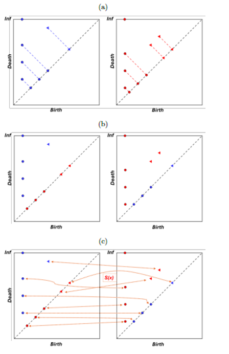

Distancia de Wasserstein
1 Distancia de Wasserstein
1.1 ¿Por qué necesitamos una distancia?
Hasta ahora hemos transformado las coordenadas celulares en diagramas de persistencia mediante complejos de Vietoris–Rips y homología persistente.
Cada diagrama de persistencia resume la estructura topológica de una muestra biológica. Sin embargo, para responder preguntas biológicas necesitamos una forma de comparar dichos diagramas de manera cuantitativa.
Por ejemplo:
- ¿Dos muestras tumorales presentan organizaciones espaciales similares?
- ¿Las muestras de pacientes con anemia de Fanconi son más parecidas entre sí que a las muestras no FA?
- ¿Existen diferencias topológicas entre epitelio y estroma?
Para responder estas preguntas necesitamos definir una métrica entre diagramas de persistencia.
1.2 Distancias entre diagramas
Existen diversas herramientas para comparar diagramas de persistencia. Algunas de las más utilizadas son:
- Distancia de Bottleneck (Bottleneck Distance).
- Distancia de Wasserstein.
- Persistence Landscapes.
- Persistence Images.
- Kernels topológicos.
Cada una captura distintos aspectos de la información topológica.
En este workshop utilizaremos la distancia de Wasserstein, una de las métricas más empleadas en aplicaciones de TDA.
1.3 Idea intuitiva
La distancia de Wasserstein puede interpretarse como un problema de transporte óptimo.
La idea consiste en emparejar los puntos de un diagrama con los puntos de otro diagrama minimizando el costo total de transporte.
De manera intuitiva:
- Diagramas similares → distancia pequeña.
- Diagramas diferentes → distancia grande.
1.4 Interpretación biológica
En nuestro contexto:
- Cada muestra genera un diagrama de persistencia.
- Cada diagrama resume la organización espacial celular.
- La distancia de Wasserstein cuantifica qué tan distintas son dichas organizaciones.
Por tanto, muestras con arquitecturas celulares similares deberían producir distancias pequeñas, mientras que muestras con patrones espaciales distintos deberían producir distancias mayores.
1.5 Definición matemática
Sean \(D_1\) y \(D_2\) dos diagramas de persistencia.
La distancia de Wasserstein de orden \(p\) se define como
\[W_p(D_1,D_2) = \left( \inf_{\vartheta} \sum_{x\in D_1} |x-\vartheta(x)|_\infty^p \right)^{1/p}.\]
donde:
- \(\vartheta\) representa un emparejamiento admisible entre los puntos de ambos diagramas.
- \(||\cdot||_{\infty}\) corresponde a la norma infinito.
- El ínfimo busca el emparejamiento con costo total mínimo.
La distancia de Wasserstein cuantifica la similitud entre dos diagramas de persistencia considerando el desplazamiento acumulado necesario para emparejar sus características topológicas.
En este análisis se ignoran los puntos con muerte infinita, ya que la construcción mediante complejos de Vietoris–Rips produce únicamente una característica infinita por diagrama, asociada a la componente conexa principal. Dado que esta característica aparece de forma consistente en todas las muestras, no aporta información relevante para su comparación.

Para ilustrar el cálculo de la distancia de Wasserstein entre dos diagramas de persistencia, consideremos los diagramas \(D_1\) y \(D_2\) mostrados en la figura. Cada diagrama representa características topológicas obtenidas a partir de una filtración, donde los puntos corresponden a clases de homología identificadas durante el análisis.
El procedimiento general consiste en:
- Proyectar puntos sobre la diagonal. Las características con baja persistencia pueden emparejarse con la diagonal, representando estructuras de corta duración.
- Equilibrar la cantidad de puntos entre diagramas. Cuando los diagramas contienen diferente número de características, las proyecciones sobre la diagonal permiten completar los emparejamientos necesarios.
- Determinar el emparejamiento óptimo. Se busca la correspondencia entre puntos que minimiza el costo total de transporte.
- Calcular la distancia. A partir del emparejamiento óptimo se obtiene el valor de la distancia de Wasserstein, que resume la diferencia topológica global entre ambos diagramas.
En el contexto de este trabajo, esta métrica permite comparar cuantitativamente la organización espacial celular entre distintas muestras biológicas. Distancias pequeñas indican diagramas topológicamente similares, mientras que distancias mayores sugieren diferencias más marcadas en los patrones espaciales observados.
1.6 Comparando muestras biológicas
Supongamos que hemos calculado diagramas de persistencia para distintas muestras:
- Carcinoma
- Displasia
- Estroma adyacente
Cada muestra produce un diagrama que resume su organización espacial celular.
El siguiente paso consiste en comparar estos diagramas utilizando la distancia de Wasserstein.
Carcinoma ─────┐
├── Wasserstein ──► Distancia(Carcinoma, Displasia)
Displasia ─────┘
Carcinoma ─────┐
├── Wasserstein ──► Distancia(Carcinoma, Estroma)
Estroma ─────┘Si obtenemos, por ejemplo,
Distancia(Carcinoma, Displasia) = 15
Distancia(Carcinoma, Estroma) = 48podemos interpretar que el patrón topológico observado en la muestra de carcinoma es más parecido al de la displasia que al del estroma adyacente.
Repitiendo este procedimiento para todos los pares de muestras obtenemos una matriz de distancias, la cual servirá posteriormente como entrada para el análisis de clustering jerárquico.
2 Implementación computacional
En la sección anterior aprendimos a construir complejos de Vietoris–Rips y a calcular diagramas de persistencia para distintas muestras biológicas.
Una vez obtenidos estos diagramas surge una pregunta natural:
¿Cómo podemos comparar cuantitativamente dos diagramas de persistencia?
Recordemos que cada diagrama resume la evolución de componentes conexas y ciclos a lo largo de una filtración. La distancia de Wasserstein nos permite cuantificar qué tan parecidos o diferentes son dichos patrones topológicos.
En esta sección construiremos una matriz de distancias entre muestras a partir de sus diagramas de persistencia. Posteriormente, estas matrices servirán como entrada para métodos de análisis exploratorio como el clustering jerárquico.
2.1 Objetivos
En esta sección aprenderemos a:
- Cargar múltiples diagramas de persistencia previamente calculados.
- Extraer las características topológicas de dimensiones 0 y 1.
- Calcular distancias de Wasserstein entre pares de muestras.
- Construir matrices de distancia.
- Guardar los resultados para análisis posteriores.
El flujo general del análisis será:
Diagramas de persistencia
↓
Distancias de Wasserstein
↓
Matriz de distancias
↓
Clustering jerárquico2.2 Importar bibliotecas
Utilizaremos las siguientes bibliotecas durante esta sección del análisis:
ospara la gestión de archivos y directorios.numpypara operaciones numéricas y manejo de arreglos.pandaspara la manipulación de datos en formato tabular.gudhi.wassersteinpara el cálculo de distancias entre diagramas de persistencia.
import os
import numpy as np
import pandas as pd
import gudhi.wasserstein as gw
import otSe necesita instalar POT
pip install POT2.3 Definir la carpeta de trabajo
Los diagramas de persistencia generados en la sección anterior fueron almacenados como archivos CSV.
El siguiente paso consiste en indicar la carpeta donde se encuentran dichos archivos para poder cargarlos y compararlos entre sí mediante la distancia de Wasserstein.
ruta = "/home/jupyter-luisraul/tda-cell-patterns-workshop/data/resultados/" # cambiar dependiendo del usuario2.4 Obtener la lista de diagramas
Una vez definida la carpeta de trabajo, podemos identificar automáticamente todos los diagramas de persistencia disponibles.
La siguiente celda busca todos los archivos con extensión .csv, los ordena alfabéticamente y muestra la lista de muestras que serán utilizadas en el análisis.
Esto resulta especialmente útil cuando se trabaja con decenas o cientos de muestras, ya que evita tener que especificar manualmente cada archivo.
archivos = sorted(
[f for f in os.listdir(ruta) if f.endswith(".csv")]
)
print("Archivos encontrados:")
for i, archivo in enumerate(archivos):
print(f"{i}: {archivo}")2.5 Carga de los diagramas de persistencia
Una vez obtenidos los diagramas de persistencia de cada muestra, el siguiente paso consiste en cargarlos en memoria para poder compararlos mediante la distancia de Wasserstein.
Cada archivo CSV contiene las características topológicas identificadas durante el cálculo de homología persistente, incluyendo:
- La dimensión homológica (
dimension). - El valor de nacimiento (
birth). - El valor de muerte (
death).
A partir de estos archivos construiremos dos listas independientes:
diag_dim0: diagramas correspondientes a los pares nacimiento–muerte asociados con las clases de homología de \(H_0\) (componentes conexas).diag_dim1: diagramas correspondientes a pares nacimiento–muerte asociados a clases de homología de \(H_1\) (ciclos).
En el caso de \(H_1\), eliminaremos las características con muerte infinita. Esto se hace para simplificar el cálculo de las distancias y evitar problemas asociados al manejo de valores infinitos.
Recordemos que, al construir una filtración de Vietoris–Rips con un radio suficientemente grande, todas las componentes conexas terminan fusionándose en una sola. Como consecuencia, en dimensión \(0\) suele existir una única componente que persiste hasta infinito, representando la componente conexa final del espacio. Dado que esta característica aparece de manera sistemática en todas las muestras, su presencia no aporta información discriminante para la comparación entre diagramas.
Por esta razón, es común ignorar los puntos con muerte infinita al calcular distancias entre diagramas de persistencia.
diag_dim0 = []
diag_dim1 = []
for archivo in archivos:
df = pd.read_csv(os.path.join(ruta, archivo))
d0 = (
df[
(df["dimension"] == 0)
& (np.isfinite(df["death"]))
][["birth", "death"]]
.to_numpy()
)
d1 = (
df[
(df["dimension"] == 1)
& (np.isfinite(df["death"]))
][["birth", "death"]]
.to_numpy()
)
diag_dim0.append(d0)
diag_dim1.append(d1)2.6 Inicialización de las matrices de distancia
Una vez cargados todos los diagramas de persistencia, necesitamos una estructura donde almacenar las distancias de Wasserstein entre cada par de muestras.
Si disponemos de \(n\) muestras, construiremos dos matrices cuadradas de tamaño \(n \times n\):
dist_dim0: almacenará las distancias entre diagramas de dimensión \(0\).dist_dim1: almacenará las distancias entre diagramas de dimensión \(1\).
La entrada \((i,j)\) de cada matriz contendrá la distancia entre las muestras \(i\) y \(j\).
Por construcción, estas matrices serán simétricas, ya que la distancia de Wasserstein cumple
\[W(D_i,D_j)=W(D_j,D_i).\]
Además, la diagonal principal contendrá únicamente ceros, pues la distancia entre un diagrama y sí mismo es igual a cero.
n = len(archivos)
dist_dim0 = np.zeros((n, n))
dist_dim1 = np.zeros((n, n))2.7 Cálculo de las distancias de Wasserstein
Una vez cargados todos los diagramas de persistencia, podemos comparar cada muestra con todas las demás mediante la distancia de Wasserstein.
El procedimiento consiste en recorrer todos los pares de diagramas y calcular la distancia correspondiente. El resultado se almacena en las matrices dist_dim0 y dist_dim1, que contendrán las distancias para \(dim 0\) y \(dim 1\), respectivamente.
En este trabajo utilizaremos la distancia de Wasserstein de orden 1. Sin embargo, existen otras métricas ampliamente utilizadas para comparar diagramas de persistencia, como la distancia de cuello de botella (bottleneck distance), la cual también está implementada en GUDHI.
for i in range(n):
for j in range(n):
dist_dim0[i, j] = gw.wasserstein_distance(
diag_dim0[i],
diag_dim0[j],
order=1
)
dist_dim1[i, j] = gw.wasserstein_distance(
diag_dim1[i],
diag_dim1[j],
order=1
)
# Alternativa:
# dist_dim0[i, j] = gd.bottleneck_distance(
# diag_dim0[i],
# diag_dim0[j]
# )2.8 Construcción de las matrices de distancia
Hasta este punto hemos calculado las distancias de Wasserstein entre todos los pares de muestras y las hemos almacenado en arreglos de NumPy.
Para facilitar su exploración e interpretación, convertiremos estas matrices a objetos DataFrame de pandas. Esto permitirá etiquetar filas y columnas con los nombres de los archivos correspondientes, haciendo más sencilla la identificación de las comparaciones entre muestras.
Cada entrada de la matriz representa la distancia topológica entre dos muestras:
- Valores cercanos a cero indican diagramas muy similares.
- Valores grandes indican diferencias más pronunciadas en la organización topológica.
La diagonal principal debe contener únicamente ceros, ya que cada muestra se compara consigo misma.
df_dist0 = pd.DataFrame(
dist_dim0,
index=archivos,
columns=archivos
)
df_dist1 = pd.DataFrame(
dist_dim1,
index=archivos,
columns=archivos
)
print(df_dist0)
print(df_dist1)2.9 Guardado de resultados
En este punto ya hemos construido las matrices de distancias de Wasserstein entre todas las muestras analizadas.
El siguiente paso consiste en almacenar estos resultados, ya que serán utilizados posteriormente como entrada para el análisis de clustering jerárquico.
De esta forma, se separa el proceso de cómputo (cálculo de diagramas y distancias) del proceso de análisis exploratorio, lo que permite reutilizar las matrices sin necesidad de recalcularlas.
# Carpeta de salida
salida = os.path.join(ruta, "distancias")
os.makedirs(salida, exist_ok=True)
df_dist0.to_csv(
os.path.join(ruta, "wasserstein_dim0.csv")
)
df_dist1.to_csv(
os.path.join(ruta, "wasserstein_dim1.csv")
)
print("Matrices guardadas.")Al finalizar, tendremos una matriz de distancias de Wasserstein que cuantifica la similitud topológica entre todas las muestras analizadas. En la siguiente sección utilizaremos estas matrices para construir dendrogramas y clustermaps mediante clustering jerárquico.